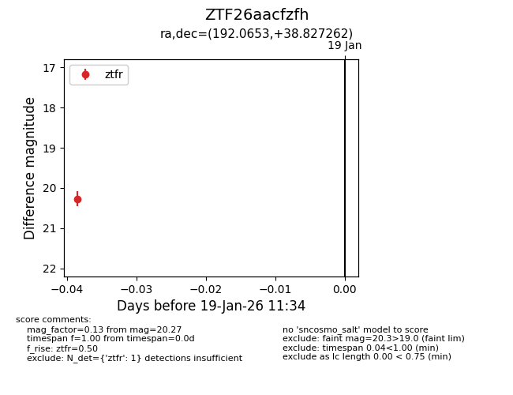
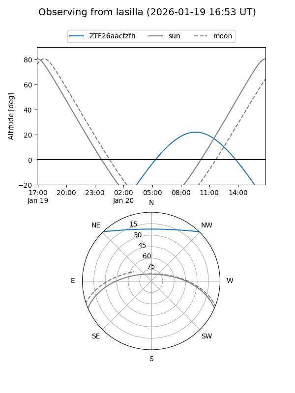
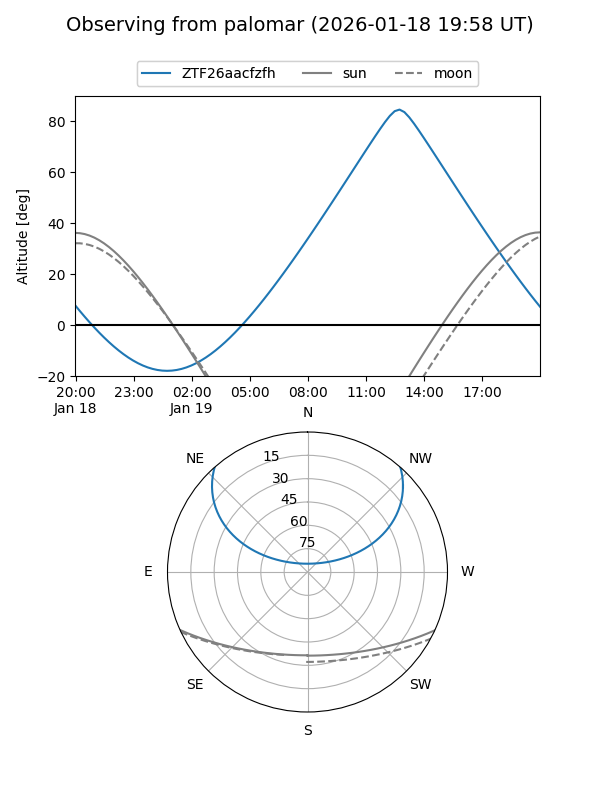

ZTF26aacfzfh
Target ZTF26aacfzfh at 2026-01-19 11:36
Aliases and brokers:
FINK: link
Lasair: link
ALeRCE: link
alt names
ZTF26aacfzfh (ztf,fink_ztf)
Coordinates:
equatorial (ra, dec) = 192.0653,+38.82726
equatorial (HMS+DMS) = 12:48:15.68,+38:49:38.14
galactic (l, b) = (125.9795,+78.28219)
Flags:
Photometry:
last ztfr=20.27
1 ztfr detections
Lightcurve

Visibility


Additional plots